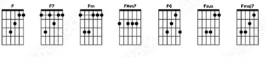

La casa de BB King
Para empezar a entender cómo tocar blues, es imprescindible conocer sus materiales fundamentales. El blues de 12 compases es una caja donde eligieron morar grandes músicos. Las formas musicales, lejos de ser una carcel, han contribuido a darle claridad y organización al discurso musical. Nada mejor que ordenar el caos de posibilidades que representan esas malditas doce notas que elegir recortar ese munda a solo cinco notas. Nunca sabremos si las pentatonicas son consecuencia de ese reduccionismo o si la escala mayor es una complejización de esa sintesis que es la pentatonica.
Acorde
